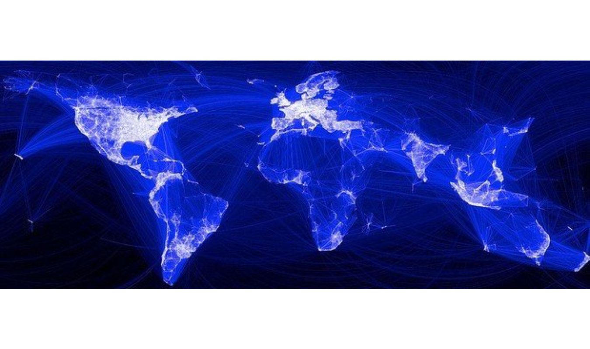
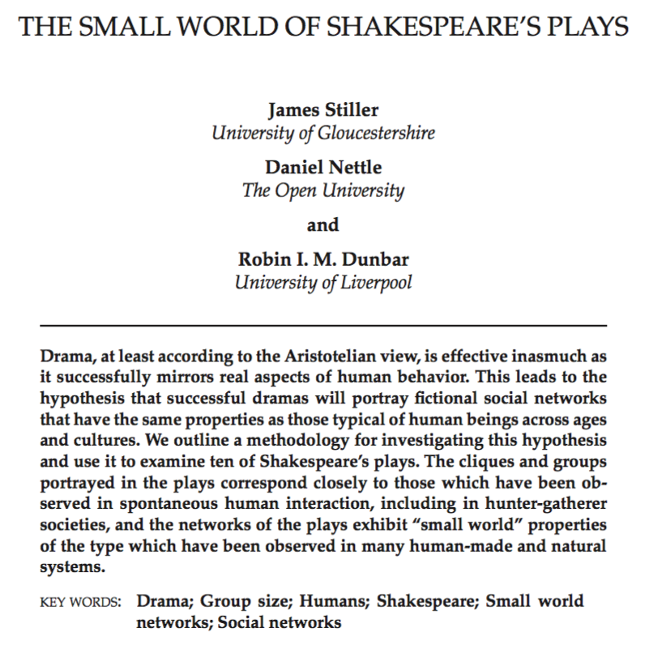
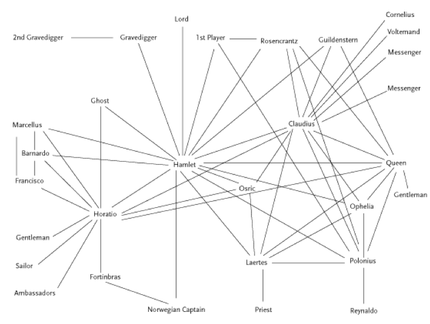
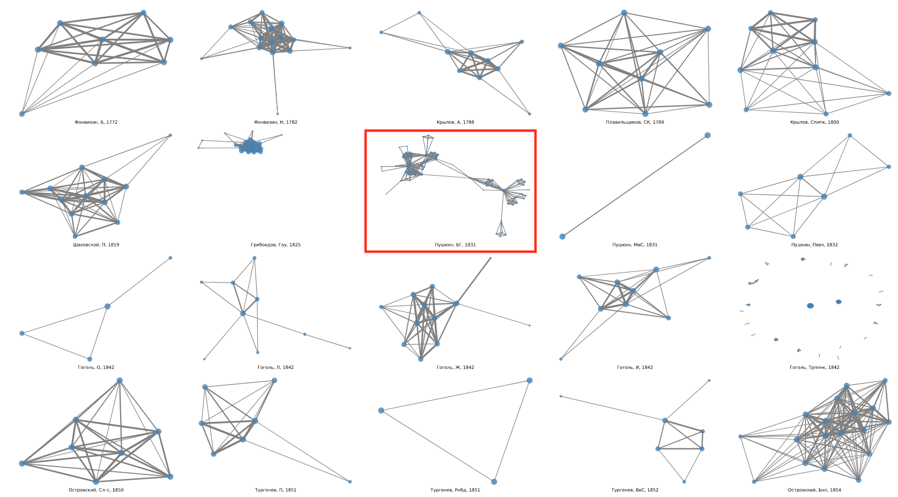

Сетевой анализ
...в исследовании языка и культуры
Эту презентацию лучше не листать стрелочками
Вперед ПРОБЕЛОМ, назад — ШИФТ+ПРОБЕЛОМ
Что сейчас будет
- Сеть (граф) как модель
- Что можно превратить в сеть и исследовать как сеть?
- Cети (графы) вокруг нас
- С кем дружил Бэкон, Пушкин на посылках: сети в гуманитарных науках
Зачем мне это знать
- Вокруг нас одни сплошные сети
- Сетевой анализ используется почти во всех науках
- Сети красивые!
Что за сети?
Сеть (граф)

состоит из узлов...

...и ребер

Что можно представить в виде сети?
Да все что угодно

Cеть авиасообщений

Направленный граф

А вот еще одна транспортная сеть

Откуда он знает, сколько мне ехать?

Взвешенный граф

Эра сетей
Интернет — по определению сеть
Wikipedia тоже

...и конечно, социальные сети

Анализ социальных сетей
Начало в 1930-е: Курт Левин, Джейкоб (Якоб) Морено


обновленная версия на сайте Мартина Гражана (Martin Grandjean)
Анализ социальных сетей
Манчестерская школа антропологии (Макс Глакман и другие) в 1950-е

Степень (degree) узла

Степень A = 5
Центральность по посредничеству (betweenness centrality)
Гарвардский прорыв. Те самые шесть рукопожатий

Это придумал Стэнли Милгрэм

Small World Experiment

Small World Experiment

Сетевой анализ в гуманитарных науках
Кто кого знал в Британии 500 лет назад?
- Проект Six Degrees of Francis Bacon (шесть рукопожатий Фрэнсиса Бэкона)
- Более 13.000 человек, более 200.000 связей
- Извлечено из Oxford Dictionary of National Biography
- sixdegreesoffrancisbacon.com
People of Medieval Scotland

Сети в вымышленных мирах
...не ограничиваются литературой!

Предыстория
Schweizer T., Schnegg M. Die soziale Struktur der. „Simple Storys“: Eine Netzwerkanalyse. (1998)

Что показал сетевой анализ вселенной Marvel?
Что вселенная Marvel вращается вокруг Капитана Америки
Но это же банально!
А еще, возможно, вскрыло стратегию продвижения супергероев

Социальные сети у Шекспира
Stiller J., Nettle D., Dunbar R.I.M. The small world of Shakespeare’s plays. // Human nature. 2003. 14/4. С. 397–408.
Социальные сети у Шекспира
Stiller J., Nettle D., Dunbar R.I.M. The small world of Shakespeare’s plays. // Human nature. 2003. 14/4. С. 397–408.

Сравнение сетей 60 британских романов
- Elson, D. K., Dames, N. and McKeown, K. (2010), Extracting Social Networks from Literary Fiction, Proceedings of ACL 2010, Uppsala, Sweden.


Анализ сети Гамлета от Франко Моретти
Франко Моретти, «Теория сетей и анализ сюжета» (2011)
Моретти о раскрытии роли Горацио через сети
Though Horatio is an old fixation of mine, I had never fully understood his role in Hamlet until I looked at the play’s network structure.
Franco Moretti. “Distant Reading”

Переведем в цифры
| Персонаж | Степень | Промежуточность (betweenness) |
|---|---|---|
| Гамлет | 19 | 219,4 |
| Король (Клавдий) | 16 | 131,6 |
| Горацио | 14 | 176,7 |
Визуализируем:


Для русских пьес — RusDraCor

rus.dracor.org
(Shiny RusDraCor)

тут и глазами можно что-то ухватывать

тут и глазами можно что-то ухватывать

Гете и Шекспир


RusDraCor: Борис Годунов
Классицизм против "шекспировской пьесы"


Важный ли герой Гаврила Пушкин?

Пушкин на посылках и betweenness centrality

Битяговский (двойной агент)

Битков (соглядатай/двойник Пушкина)

Жанры пьес — и плотности сетей


Плотность = 0.5 (3/6) Плотность = 1 (6/6)
Плотности комедии и трагедии отличаются

Плотности комедий и не-комедий в RusDraCor

Осторожно, предварительные данные!
Gephi (gephi.org)
- Простой инструмент для анализа сетей (не надо уметь программировать)
- "like Photoshop but for graph data" (gephi.org)
- Открытый и бесплатный
- Написан на Java и работает на всех основных ОС
- Расширяемый (можно создавать плагины)
- …немного глючный : )
CSV — cамый простой формат кодирования сетей
- Даня, Маша, 1
- Вася, Петя, 3
- ...
Из такого:
Иииии -- новые доклады!
tinyurl.com/y45as9h8
Извлечение сообществ: Karate Club
- Половина участников ушла вместе с инструктором делать новый клуб
- Вторая половина осталась (или совсем бросила карате)
- Зэкэри написал программу, которая на основе собранных до раскола данных пытается предугадать границы раскола группы
- Ссылка на статью Зэкэри (1977)
Извлечение сообществ: Karate Club
The process leading to fission is viewed as an unequal flow of sentiments and information across the ties in a social network. This flow is unequal because it is uniquely constrained by the contextual range and sensitivity of each relationship in the network. The subsequent differential sharing of sentiments leads to the formation of subgroups with more internal stability than the group as a whole, and results in fission
Матрица (таблица) связей - исходные данные

Сеть этих связей

Моя визуализация Karate Club

Karate Club Club
Шуточное сообщество, куда принимают каждый год первого человека, упомянувшего Karate club на научной конференции по сетевому анализу